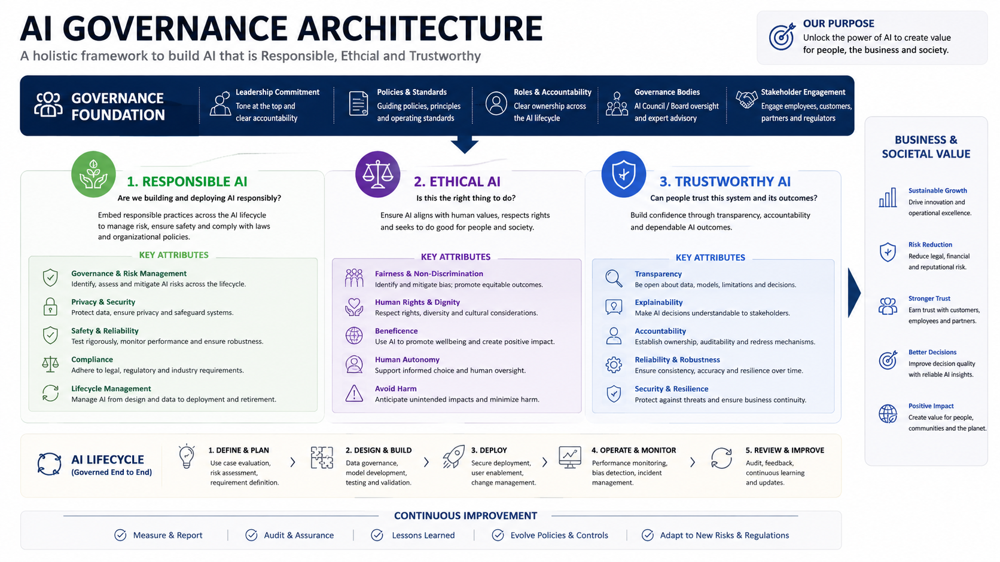

The Governance Roadmap
Three founding pillars. A four-stage lifecycle every AI tool must pass through. And the question every organisation must be able to answer before any tool goes live.

Three founding pillars
0:25 – 0:35Governance without principles is just paperwork. Each pillar is a question every employer must be able to answer — at any time, to any stakeholder.
Responsible AI
We proactively prevent collateral harm to people and the organisation before it occurs — not after an incident forces our hand.
Ethical AI
Our rules are transparent, legible, and reflect the values of the company, its employees, and the broader community it serves.
Trustworthy AI
Our systems are reliable, auditable, and unbiased — backed by continuous documentation, audit trails, and third-party review.
The four-stage AI lifecycle
0:35 – 0:47Every AI tool your organisation uses — or is considering using — must pass through these four stages. This is not a one-off approval gate. It is a repeatable machine that runs continuously.
Discovery & business use case
Define the explicit problem the tool solves. Specify the inputs, the expected outputs, and which human decisions it supports or replaces. Who asked for this tool, and why now?
Risk assessment & procurement review
Cross-functional evaluation covering data privacy terms, bias exposure, vendor accountability, regulatory risk, and RBAC requirements. HR, Legal, and Technology must all sign off. This is the stage most organisations skip entirely — and the one that causes the most damage when absent.
Deployment & human guardrails
Controlled rollout with role-based access configured, human-in-the-loop requirements active, protected-leave overrides in place, and employee transparency notices published. No tool goes live without a named human owner accountable for its outputs.
Continuous compliance & auditing
Quarterly checks for algorithmic drift, hallucinations, bias creep, and adverse-impact monitoring. The lifecycle never ends — it loops. A tool that cleared Stage 2 two years ago may not clear it today. The audit cadence must be named and owned.
Who owns Stage 2?
In the absence of a named owner, tools bypass review and enter via personal accounts. The cross-functional team must include all four roles below — a committee without a named individual is not ownership:
- HR — workforce impact, bias risk, employee rights
- Legal / Compliance — data terms, regulatory exposure
- Technology / IT — security, RBAC, integration risk
- Named risk owner — one accountable individual
Five tactical non-negotiables
- Human-in-the-loop required on all high-stakes decisions
- Tool boundaries communicated explicitly to all staff
- RBAC enforced — not every employee accesses every output
- Adverse-impact monitoring, internal and third-party
- AI literacy embedded — employees can query model logic
Group exercise — lifecycle mapping
0:47 – 0:55Small groups of 3–4. Each group picks one AI tool their team currently uses or has recently evaluated.
Map it to the four stages: Where did it actually enter your organisation? Was there a formal discovery process? A cross-functional risk review? Is there a named compliance owner reviewing it quarterly? Or did it arrive through someone's personal account and quietly spread?
Share back in 60 seconds each. Debrief question: which stage is most consistently skipped — and who would need to change for that to be different?
Do not resolve the discomfort too quickly. The gap between the lifecycle as described and the lifecycle as actually lived is the governance problem. Let the room name it themselves.

The lifecycle tells us how a tool enters the organisation. The next question is harder: what should AI be doing, and what must it never be allowed to do? That is the Green Lights and Red Lines framework — and it is where the real disagreement lives.